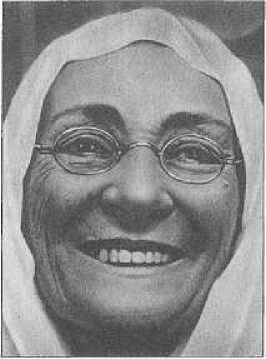
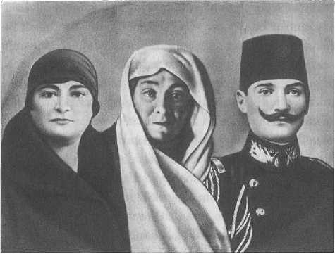
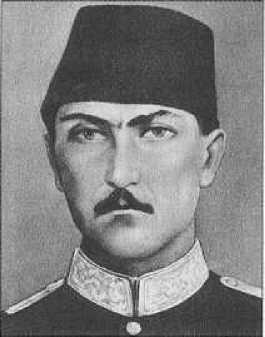

1
İMPARATORLUĞU DİRİLTEN NESİL
1880’liler Kuşağı
TARİH yazarken hem Osmanlı
İmparatorluğu’nun yıkılışından hem de Türkiye Cumhuriyeti’nin kuruluşundan bahsetmek durumundayız. Tarihçi ve hukukçu olarak bu bakış açısı normal gibi görünmektedir; zira aslında adı değişse de devlet devam etmiştir. Nitekim Osmanlı ve Cumhuriyet arasındaki ilişki, basit bir haleflikten ibaret değildir. Ortada bir imparatorluğun yıkılışı, belki de daha doğru bir tabirle dağılışı, vardır. Devleti yaşatan kadrolar devam etmiş ve Cumhuriyet’i kurmuşlardır. Bunların idealleri hiç şüphesiz ki mutlak bir monarşiye, bir şark despotizmine sempati ve bağlılık duymaya dayanmıyordu. İçlerinde muhafazakâr diye tanımladıklarımız bile hükümdarlarına, o zamanlar ancak Britanya ve İskandinav monarşilerindeki kadar bağlılık gösteriyorlardı. Devlet ve hukuk düzeni konusundaki anlayışları daha ilerideydi. Şu bir gerçektir ki Osmanlı askerî seçkinleri, 1826’da klasik askerî örgütlerin ilgasından ve yeniden teşkilâtlanmasından itibaren, Avrupa’daki ya da dış dünyadaki meslekdaşları gibi modern fenne ve tekniklere bağlı, buna göre de modern dünyanın gereğini kavrayan düşünce ve davranıştaki gruplardan oluşuyordu.
1880’li yıllar nesli çok ilginç bir şekilde, Osmanlı Harbiye ve Bahriye mekteplerinde beceriksiz hareketlere girişen bir kuşağın dışında, âdeta bu imparatorluğu yaşatmaya çalışan, onun için cephelerde çarpışan, üstelik son zamanlarda da isyanları, hatta oldukça siyasi nitelikli isyanları ve komitaları takip edip, bastırarak yetişen ve nihayetinde Birinci Dünya Savaşı içinde şekillenen bir nesildir. İşte akabinde Cumhuriyet’i kuran bu kumandanlar, bu nesil, yani Mustafa Kemal’in nesli, 19. asrın sonunda reformlar geçiren bir ülkenin askerleridir. Doğu’da ilk defa Müslüman bir ülke kendisini, ordusunu ve teknolojisini değiştirmiştir. Mısır’ın 19. asırdaki reformları ilk anda göz alıcı olmasına karşın bir ulus toplum yaratacak ve hukuk sisteminde dünyaya intibakı sağlayacak zarurî değişiklikleri gerçekleştirememiştir. Osmanlı Devleti Tanzimat döneminde başta Hidivyal Mısır’ı izlemiş görünüyor. Yalnız önde olduğu alan hukuk sistemini romanize etmeye başlaması olmuştur ve bundan başka ordudaki reformlar daha köklüdür. Her şeyden önce orduda Türk diline, Türklüğe önem verildiği gibi Avrupa’daki benzer bir kurmay eğitimi hemen hemen Batı devletleriyle eş zamanlı olarak verilmiştir. İmparatorluk yönetimi ve ordusu Türkleşme gibi baskın bir niteliğe sahiptir ki Kavalalı Mehmet Ali Paşa’nın Mısır’ında bu hususiyet görülmez. Mustafa Kemal Paşa, Fevzi Paşa ve Enver Paşa işte bu zümredendir. Bu insanlar bu dünyayı 30 yaşında öğrendiler, Suriye’de, Arabistan’da askerlik yaptılar ve ardından Balkanlar’a gittiler. Osmanlı İmparatorluğu, çökme döneminde olsa da bir değişim içerisindeydi. Öylesi bir ortamda büyük kumandanların çıkmaması mümkün değildi ve burada bir tesadüften bahsedilemez. Bu grup, monarşi ile geleceğin Cumhuriyet’i arasında bir denge hesabı yaptılar ve cumhuriyet öne geçti.
Balkanlar
Balkanlar’da bugünkü görüntü bile pek iç açıcı değildir. Balkanlar, gençliğimde, 20-25 yıl boyunca kesif olarak ilgilendiğim bir bölgedir; çünkü Osmanlı orada kuruldu ve gelişti. Balkanlar benim için en parasız dönemlerimde ve sosyalist dönemin tüm imkânsızlıklarına rağmen ağzına kadar yüklü bavullarla oradan oraya gezdiğim, kitap topladığım bir dünyadır. Her ülkede muhtelif etnik gruplar vardır ve homojen değildir.
Herkes herkesin düşmanıdır, ancak, herkes herkesin bir tarafına da ısınır ve beraber yaşarlar. Çünkü âdet, anane, hayat tarzı birbirine çok benzer ve bir Balkanlılık ortak kimliğinden söz edilebilir.
Balkanlar beş asırlık Türk hâkimiyetinin çatırdadığı, milliyetçiliğin revaçta olduğu 20. yüzyıl başında da siyasi olarak çok karışıktı. Atatürk’ün dünyası da her şeyin başladığı o asırda şekillenmiştir. Yaşadığı coğrafyadan etkilenen Mustafa Kemal içkisiyle, yemeğiyle, dansıyla ve folkloruyla bütün Balkanlıları biliyor, seviyordu ve Selanikli olması hasebiyle belirgin ölçüde Balkanlar’daki her dille ilgiliydi. Üstelik Selanik büyük, renkli, kalabalık ve dış dünya ile bilhassa Avrupa ile en geniş ilişkileri bulunan bir bölgeydi.
Atatürk şüphesiz o müthiş milliyetçi, infiratçı, gerilimli atmosferden etkilenmişti, kaldı ki etkilenmemesi de mümkün değildi. Bu gibi çözülmezlikler içinde yetişen insanların zekâları elbette çabuk gelişir ve olgunlaşırlar. Genç Mustafa Kemal de bu imparatorluğun bir zabitiydi. Metinde de görüleceği gibi bir sene Suriye’de Vatan Cemiyeti’ni kurmuş, ertesi sene Makedonya’ya gelmiş, oradan Trablusgarb’a gönüllü ama gayr-ı resmî olarak savunmaya koşmuş ve Trablusgarb’taki görevi sürerken Balkan Savaşı patlayınca tekrar bu tarafa gelmiştir. Bu hareketlilik elbette kendisini çok etkilemiştir.
Balkanlar’daki bir zabit, bugünün otuz yaşında dahi olgunlaşamayan insanının anlayamayacağı şekilde bir başka türlü yetişirdi ve otuzuna geldiğinde çoktan yetişmiş ve olgunlaşmış olurdu. Benzer durumdan belki diğer imparatorluklar için de bahsedilebilir, ancak, bunların içinde en büyük trajediyi yaşayan ve bir çıkış yolu arayan Osmanlı insanıdır, Türklerdir. O sebeple bu Türk nesli bilinmeli ve kendisine kulak verilmelidir.
Ben yaşım gereği bu nesilden birçok insanla sohbet etme, daha ziyade dinleme fırsatı buldum. 1960’larda, Birinci Dünya Savaşı’nın gazileri hayattaydılar ve uzun tren yolculuklarında kendileriyle konuşur, dinlerdim. Bu kimseler olgundu, kendini onları dinlemek zorunda hissederdin ve itiraz da edemezdin. Bunun sebebi sadece yaşlı olmaları değil bir mantık sahibi olup, bir gerçeklik olarak konuşuyor olmalarıydı. Onlar büyük faciaların, yıkımların ama aynı zamanda büyük yapımların adamlarıydılar. Bu şartlarda yetişen liderlerin de başka türlü olacağı muhakkaktır. Bu kimselerin belirgin tavırları vardır ve genç de olsalar ham ervah değillerdir. Bizim siyaset hayatımızda bazı tipler var ki hiç büyümüyorlar. Bu tıkanıklık o neslin adamlarında görülemez. Hatta o dönemin genç yedek subayı Adnan Menderes’e bakılması, hayat hikâyesinin öğrenilmesi için Şevket Süreyya (Aydemir) Bey’in okunması gerekir.-1 Beğenilmeyebilir ama Celal Bayar’a bakmak gerekir; bir ölçü, olgunluk vardır. Yine beğenmeyeni çok olan İsmet Paşa’nın çok sağlam prensip ve zihnî müesseseleri vardır. Hepsinin içinde Atatürk şüphesiz çok başka bir yerdedir.
Mustafa Kemal’in Doğum Tarihi
1877, 1880 gibi tarihler verenler varsa da biz doğum tarihi olarak 1881’i kabul etmek durumundayız. Doğum günü ve ayı, bizim eski kütüklerde yakın zamanlara kadar pek kayıtlı değildi. Devletin nüfus hareketliliğini ancak 1950’lerden sonra ciddi olarak takip ettiği bilinir. Yangınlara kurban giden nüfus idareleri de tarihî araştırmaları güçleştirir. Yakın zamanda dahi nüfus idareleri beyanı dikkate almaz, kimliğe sadece yılı yazar, günü kaydetmezdi. Bu nedenle Atatürk doğum gününü kendisi seçmiştir (19 Mayıs). Bu kararla Samsun’a çıkış tarihini de ihsas etmiştir. Doğum yılı mezuniyet arkadaşlarına yakın tarih olduğu için 1881 doğumlu olduğunu kabul ediyoruz.
Mustafa Kemal’in yıkılan Osmanlı’yı bir başka şekilde dirilten nesilden olduğunu görüyoruz. Doğumdaki adı Mustafa’dır. Kemal adı, Osmanlı bürokrasisinde ve askeriyesinde âdet olduğu üzere, çokça kullanılan isimleri birbirinden ayırmak için ilave edilmiştir. Mesela ilmiye ve bürokraside birçok genç aday Ahmed vardır. Bunlardan medresedeki biri “Cevdet" olur, Mülkiye’deki “Midhat" olur. Ahmed Cevdet Efendi (Paşa), Ahmed Midhat Paşa gibi... Mehmed Emin ilaveyle “Ali Paşa" olur. Mustafa Kemal’e bu ismin rüşdiye yıllarında, onu seven bir hocası tarafından “İkimiz de Mustafa’yız, sen Kemal ol" denilerek verildiğini biliyoruz. Kemal “olgun, aklı başında, mütekâmil" demektir. Aslında bu sınıfta bir sürü Mustafa’nın olmasında bir gariplik yoktur.
Soyağacı
Aslen Konyak (Karaman eyaleti) diyenler olduğu gibi dedelerinin Aydın yöresinden göç etmiş olduğunu söyleyenler de vardır.-2 Ama biz Rumeli’ye kimin gönderildiğini ve nereden nereye gönderildiğini bilemiyoruz. Bugünkü mübadil, muhacir aileler için de aynı durum geçerlidir. Nitekim bizde kilise gibi, vaftiz yapıp kayıt tutacak bir kurum yoktur. Evlilik de ölüm de kaydedilmez. Ölüm çok yakın zamanlara kadar deklare edilmezdi. Yahudilikte de bu gibi kayıt işleri gettoda yaşadıkları için çok sonradan oturmuştur.
Mesela Macaristan’da seçkin bir ailenin asalet beratının nerede olduğu veya hangi kalede saklandığı bilinir, zira, noteryal bir senet gibi bazı haklar veren belgelerin korunması gerekir. Bizde ise bir kimse bir paşanın kızıyla evlenir, kız bu evlilikte çocuk doğurmadan ölür, ölünce adam da bütün sülalenin şeceresini alır, gider başka yerde başka biriyle evlenir ve ondan sonra o paşanın soyundan geldiğini iddia eder. Bazılarının kadın tarafından gelmesine rağmen erkek soyu gibi o ismi taşıması da çok yaygındır. Mesela Fuad Köprülü’nün şeceresiyle ilgili bir tartışma çıkmış, Ali Emiri Efendi tarafından, baba tarafının Kıblelizâde ailesinden geldiği, Köprülüzâde adının ise anne tarafına ait olduğu söylenmişti. Fuad Bey bu iddiaya çok kızmış, Franz Babinger de bunu kitabında bir kusur gibi kullanmıştı. Şüphesiz bu durum Türk toplumuyla Babinger’in Alman anlayışının bağdaşmamasından kaynaklandı.
Netice olarak bizde doğru düzgün kayıt yoktur. Türkiye’de çok kimse şeceresini sağlam bir şekilde çıkaramaz. Ancak Atatürk’ün hem baba hem de anne tarafından dedeleri birkaç kuşak öncesine kadar bellidir ve isim isim bilinir. Aslen bir Türk köyü olan bugünkü Makedonya’nın Kocacık köyündendir.-3
Atatürk ve Ailesi
Kahvehane köşelerinde, uzun yıllardır tekrarlanagelen bazı yaveler yakın zamanda ilk defa bu kadar açıklıkla söylenir hale geldi. “Falanın annesi, babası şu işi yapardı, filan şöyledir" demek hiç kimsenin hak etmediği laflardır. Her şey bir yana, Türkiye cumhurbaşkanlarının ilki ve tabii bazılarının asıl rahatsız olduğu üzere, Kurtuluş Savaşı’nın Başkumandanı, TBMM Reisi ve Yeni Türkiye’nin kurucusu olan Atatürk ile silah arkadaşlarının aralarındaki ilişkileri abartarak yorum yapan çevreler, maalesef bu sefer doğrudan doğruya Atatürk’ün ailesine el attılar.
Bu amiyane bühtanı anlamak pek de güç değildir. Sebebi bizim hazin çağdaşlaşma serüvenimiz, kasabalara gerçek bir eğitim götürememiş olmamız, mektep bitirenlerin gerçekleri yansıtan bir yorumuna rastlamakta çektiğimiz zorluk ve kulaktan dolma, dedikodu yöntemini tarihçiliğe yansıtıyor olmamızdır. Sözü edilen kişilerin biyografilerinin ne kadar çarpıtılarak ve noksanla ele alındığını görünce dahi bu anlaşılır. Mesela sözü edilen yorumlarda Afet İnan Hoca’nın akademik kariyerinin ciddiyetle tetkik edilmediği anlaşılıyor. Kaldı ki bizde çoğu kişi biyografi takip etme alışkanlığına sahip değildir.-4- Birisinden dedikoduyla bahsetmeyi tercih ederler. Aynı yöntemi gazetecilikte de hatta ansiklopedicilikte de kullanırlar.
Mesela bir tarihte bir gazetede Profesör Saffet Rıza Alpar için, “Babası Rıza Paşa da Atatürk’e düşmanlığıyla biliniyor" diye bir ibare kullanılmıştı. Gazete, Rektör Saffet Rıza Hoca’ya karşıydı. Ancak babasıyla uğraşmasının anlamı neydi? Üstelik Balkan Savaşı’nın en kahraman üç kumandanından biri olan İşkodra müdafii Hasan Rıza Paşa o mevkide şehit düşmüştür. Şehit olduğu gün ikinci kere mirlivalığa (tuğgenerallik) terfi etmiş ancak beratı, harb madalyası ve kılıcı kendisine ulaşamamıştı. Gazi Mustafa Kemal Paşa’yla hayatta hiç tanışmadığı bilindiği gibi yaş ve rütbe farklarından ötürü gıyaben tanıdığı bile şüphelidir.
Bir başka ansiklopedideyse Karadağ Muharebesi’nde şehit düşen ve Tanzimat döneminin reformcu askerlerinden olan, Nâzım Hikmet’in ceddi Mustafa Celaleddin Paşa, yani Polonya aristokrasisi arasındaki unvanıyla Kont Konstantin Borzecki’den, “Bir Polonya Yahudisidir" diye bahsediliyordu. Burada ön yargı ile bilgisizlik yan yana gitmektedir.
Daha beter bir olaya da şahit olundu: Atatürk’ün Dâhiliye Vekili Şükrü Kaya’ya, İsmet
İnönü’ye hitaben bir mektup yazdırttığı iddia edildi. Mektup TBMM rumuzluydu. Yalnız rumuzun o tarihteki dizgi biçimiyle bir alakası yoktu; bilgisayardan çıktığını herkes anlardı. Güya Şükrü Kaya, İsmet Paşa’ya, “Atatürk sizi öldürtecek, ben koruyayım" diyormuş. Şüphesiz sahte bir belgeydi. Bir de Kâzım Karabekir Paşa’yla Türkiye’nin Mareşali Gazi Mustafa Kemal Atatürk’ü karşı karşıya getirmeye çalışıyorlar. Bu gayretin hedefinin kimler olduğu doğrusu beni ilgilendirmiyor, ama ardında yatan başka özlemler var ve bu özlem sahipleri seslerini bu gibi oyunlarla yükseltmeye çabalıyorlar.
Şimdilerde ise Gazi Mustafa Kemal (Atatürk) ve annesi Zübeyde Hanım için yalan yanlış tasnifler yapılıyor.
Peki, “Bu 50 yıllık uydurma neye dayanıyor?" derseniz; Türkiye’de nüfus kayıtlarının geç tutulması, mevcutların iyi korunamaması, hatta zaman zaman kasaba nüfus memurluğu arşivlerinin mahsus yanmasından ileri gelen bir sorundur. Mevcut belgeliklerimizin çeşidi ve türü değişiktir. Katolik ve Protestan Avrupa’da herhangi bir köyün kilisesinde bulunabilecek vaftiz, nikâh ve cenaze kayıtlarına Doğu’da rastlanmaz.
Sırf İslam dünyasında değil,Ortodoks Hıristiyan âleminin kiliselerinde de bu tür açıklar vardır.
Dolayısıyla Türkler soyunu, sopunu ve unvanını yaşadığı şehrin ve mahallenin halkının hafızasına ve ön planda da sülalelerine emanet ederler. Hemşehriler ve akrabalarla ilişki, ailemizin ve bizim tarihî kimliğimizin nüfus ve tapu kaydıdır. Ayrıca Balkan Savaşları, Rusya’nın

Mustafa Kemal’in çok sevdiği annesi Zübeyde Hanım. işgalleri gibi olaylarla vilayetler elden çıkıp, insanlar perakende dağıldıkça toplumsal kayıtlar zayıflamıştır. Keza Kırım’dan Kafkaslar’a kadar çok geniş bir sahadan Anadolu’ya göçler yaşanmıştır. Hemen her ailenin ve Rumeli’nin her evladının başına gelen bu felaketten istifade etmek ise son 50 yıldaki bazı militan, kasabalı siyasilerin ve amatör tarihçi yoldaşlarının marifetidir.
Hukukunu müdafaa edemeyecek tarihî büyüklerimizin savunmasını tarihçiler ve tarih bilenler yapmalıdır. İstiklâl Savaşı kumandanlarıyla didişmeye kalkan amatör politikacıların faaliyetlerinin arkasında tarihçilik merakının hatta ideolojinin ağırlık kazandığına inananlardan değilim ve saiklerin başka olduğunu düşünüyorum. Türk tarihinin kurumları ve büyükleriyle didişmek, yani tahripkâr bir milliyetçilikle ortaya çıkmak sadece bize has olmayıp diğer toplumlarda da görülmektedir.
Atatürk Evi
Küçük Mustafa’nın hiç şüphesiz ki eğitim ve çocukluk hayatı yeni yeni araştırmalara konu oluyor. Kendisinin sonradan Rumeli ordusunda görevliyken Selanik’te kiralayarak oturduğu ve bugün Türkiye Başkonsolosluk hanesinin mülhakatı içinde bulunup müze olan binanın, yani Atatürk evinin arkasındaki daha küçük bir müştemilatta doğduğu, ailenin o zaman orada oturduğu anlaşılıyor.-5 Bu konak yavrusu evse bir Bulgar çorbacıya, yani, önde gelen bir cemaat temsilcisine aitti. Son yıllarda Türk turistlerin bu eve ciddi bir ilgi göstermeleri güzel bir hadisedir.
Mayasını Yoğuran Şehir: Selanik
Bugünkü Yunanistan’ın ikinci büyük şehri olan Selanik, ismini Makedonyalı Büyük İskender’in kız kardeşi Thessalonike’den alır. Şehri 1430’da fetheden Hamza Bey’in adını taşıyan camii bugün yarı harabe haldedir. Tahsin Paşa ise tam 482 yıl boyunca Osmanlı şehri olan Selanik’i 1912’de, Balkan Savaşı’nda, tek kurşun bile sıkmadan Yunanlara teslim etmiştir.

Mustafa Kemal, annesi Zübeyde Hanım ve kardeşi Makbule Hanım ile birlikte.
1880’lerde dahi Selanik kozmopolit bir şehirdi. Mustafa Kemal’in de künyesine baktığımız zaman Bulgarcadan ve Rumcadan anladığını görüyoruz. Bu, Osmanlı bürokrasisinin mensublarının çoğunda görülen bir özelliktir. Farsçadan Gülistana kadar öğrenmiştir, ki bu epey bir Farsça demektir. Bir parça da Arapça öğrenmiştir. Eğer bir çocuk Rumeli kökenli ise kuvvetle muhtemel Bulgarca veya Rumca tekellüm eder veya anlardı diyebiliriz.
Bunun üzerine, dönemin bütün kurmayları gibi, ya Fransızca ya Almanca veya her ikisinde de tecrübe sahibidir denebilir. Çünkü askerî literatür o zamanlar bu iki dile istinad ediyordu. Bahriyedeyse İngilizce kullanılıyordu. Nihayetinde Osmanlı zabiti yetişmiş biridir. Bu yetişmeyi hareketli bir eğitim hayatının oluşturduğu aşikârdır. Bu hareketli eğitim hayatı, bu kaliteli eğitim sadece üst sınıflara mahsus bir şey değildi. Aslında çok garip bir değişim vardır. Üst sınıflar bu değişim için Tanzimat, hatta Tanzimat’ı bırakınız, Meşrutiyet dönemini beklemişlerdir. Son dönemin şehzadelerinin Galatasaray gibi seçkin bir okula girerek Fransızca öğrenmeleri geç döneme has bir gelişmedir. Birdenbire 1880’lerde,1890’larda doğan şehzadeler ancak böyle bir vasfa sahip olabilmişlerdir. Bazıları hatta sonradan Almanya ile olan ilişkilerimiz dolayısıyla Potsdam’da askerî okula devam etmişlerdir. Mesela tipik bir temsilci, Sultan Abdülaziz’in torunu, son halifenin oğlu Sabiha Sultan’ın eşi ve son padişahın da damadı olan Ömer Faruk Efendi’dir.
Bu eğitime giren insanlar arasında, yüksek zümreden de çok daha mütevazı halk tabakasından da gelenlerin şansları eşittir; bir diğer ifade ile bir kurgunun içine öbürünün aşılanması söz konusu değildir, bu bir toplama eğitimidir. Hatta bu eğitimin içine girenlerin belli oranı da gayr-ı müslimlerdir.
İmparatorluğun o tarihte (Tanzimat devri sonrası) sihirli bir oranı vardır, bu da üçte birdir. Emperyal nüfusun, (tebaa-ı şahanenin) üçte biri o vakit hane sayısı sisteminde de gayr-ı müslim olarak düşünüldüğü için, bu gibi okullara öğrenci alımında da bu yönteme başvurulurdu ve öğrenciler arasında Ermeni, Rum, Yahudi kompartımanların kontenjanları tespit edilirdi. Galatasaray Sultanisi’nde hem şehzade Ömer Faruk Efendi, hem de geleceğin Ermeni Patriği Ohannes Arşaruni öğrenim görüyordu. Yahudi cemaatinden gençler, paşazadeler, hali vakti yerinde olanlar olduğu gibi, pekâlâ daha fakir sınıflardan insanlara da rastlanabiliyordu. İkinci bir kapı vardı ki bu da doğrudan doğruya askerî eğitimdi. Askerî eğitimde oranlar daha değişiktir, bilhassa muharib sınıfta öyledir. (Ama fazla fark etmiyor. Müslüman meslek sınıfı subayların yanında az sayıda gayr-ı müslim de var.)
Selanik’in bir diğer özelliği ise liman ve demiryolu bağlantısı ile Avrupa’nın ticarî ve fikrî tesirine de oldukça açık bir şehir olmasıydı. Dolayısıyla Gazi’nin dünya görüşü, meselelere bakışı, hatta karakteri üzerinde Selanik gibi bir şehirde doğup, büyümüş olmak etkili olmuştur. Uzak bir Anadolu köyünde doğup büyüse belki bu imkânlara sahip olamayacağı için köyde kalır veya tamamen farklı bir meslek edinirdi.
Küçük Mustafa’nın, annesinin telkini ile mahalle mektebine gönderildiği anlaşılıyor. Burada bir konunun üzerinde durmakta fayda var. Türkiye’de Kemalist rejimin ve Atatürk’ün muarızı olanlar, onun Selanik dönmesi denen Sabetaycı gruptan olduğunu, bir heterodoks Yahudi olduğu iddiasını sürekli tekrarlarlar. Selanik kalabalık, hatta bir dönem için bütün Doğu Akdeniz’in Yahudi metropolü olacak kadar kalabalık miktarda Ortodoks Yahudi’nin ve 1660’lardaki Sabetay Sevi olayından sonra da yanlış olarak “avdeti" denilen gruba mensub nüfusun -sayısı belli olmamakla birlikte- yaşadığı bir yerdi. 1912 Balkan Savaşı’ndaki bozgunda, herkesten evvel Bulgar müttefiklerini atlatarak şehri işgal eden Yunan ordusunun mahallelerde giriştiği katliam ve taramada ilk önce Yahudi mahallelerine saldırdığı bugün artık Yahudi bilginlerinin tetkikleri ile daha esaslı bir şekilde anlaşılıyor.-6- Amaç şehri Helenize etmekti. Fakat şu kadarını söylemek lazım ki, şehir gerçekten kozmopolitti. Burada yetişen insan, birtakım dillerden haberdar olur, birtakım etnik grupları tanır, bunlar üzerinde ya dostane ya da belki hasmane bilgilere sahip olabilirdi. Ama her halükârda kozmopolit bir Osmanlı dünyasının çocuğu olarak yetişirdi. Bu her dinden ve gruptan bireyler için geçerli bir oluşumdu.
İki nokta Mustafa Kemal için ileri sürülen bu gibi iddiaları çürütür. Birincisi, fundamentalist mesnedsiz görüşün ortaya attığı efsanedir. Hatta belki de Sabetayistler de bu gibi bir söylentiyi kabul edebilir. Ancak doğru değildir, zira, şehirli bir grupla ilgisi yoktur. Hem annesi hem de bildiğimiz kadarıyla babası kırsal kökenli bir aileden geliyor.
İkincisi, annesinin onu yolladığı okul evde böyle bir havanın bulunmadığını gösterir. Çünkü ilk eğitimde hiçbir cemaat asla diğerinin kapısına çocuk koymaz. Bu İstanbul ve sadece birkaç büyük şehirde vardır ve istisna olarak görülebilir. Orada bile aslında dinî tutum ön planda gelir. Kimse beş- altı yaşındaki çocuğu doğrudan doğruya kendi sülalesinin, geçmişinin kontrolü ve izi dışındaki bir eğitime tabi tutmaz. Kendisinin düzenli olarak devam ettiği Şemsi Efendi Okulu ve o okulun başmuallimi Şemsi Efendi’nin Sabetayist mezhepten olduğu doğrudur. Fakat gerçek şu ki; bu okul matematiği ve okumayı herkesten önce ve çok sağlam bir şekilde öğretirdi. O okulun tercih edilmesinin sebebi bu olmuştur. Oraya gitmesini arzu eden babadır. Bu sevkiyatta rasyonel fikirler geçerli olmaktadır. Ve nihayet unutulmamalı ki, kendisi asker ocağına adanmıştır. Mustafa Kemal’in askerî eğitimi ve askerî memur hayatı boyunca modernist, dünyaya açık, dinî inançlarını çok öne koymayan, bunların üzerinde, bunun ritüeli üzerinde pek hassas davranmayan takımdan olduğu açıktır. Oruç tutan, beş vakit namaz kılan bir zümre olduğu gibi bunlara itaat etmeyenler de vardı.
Mülkiyeli olduğu ve iyi derece ile bitirdiği için mabeyne memur olarak alınan Müştak Mayakon’un-7 Yıldız hatıratında belirttiği gibi, ramazanda Yıldız Sarayı alenen oruç yenen yerlerdendi. Doğrusu muhafız alaylarının, asker sınıfının oruçla pek de başı hoş değildi. Bu konuda sıkıntıya girmeye lüzum olmadığını hem mabeyn hem de bizzat padişah biliyor, bu ahvale göz yumuyordu. Yaşam şartları kurmay sınıfın ve kumanda kademesindekilerin bu konudaki hareket serbestisini gerekli kılmıştır.
Aile Kökeni Üzerine
Osmanlı cemiyeti kadar soyuna sopuna önem veren bir cemiyet az bulunur. Fakat maalesef bunun ciddi biçimde kayıt altına alınması söz konusu değil. Bir gerçek vardır. Bugün herhangi bir Avusturya, Alman, Fransız köyünde, bir köylünün soyunu tespit edememek âdeta mümkün değildir. Altını çizerek ifade edeyim; etmek değil edememek mümkün değildir! Şahsen kendimle ilgili bir merak duydum ve kendi merakımla ilgili bu olayda, bebekliğimin geçtiği Alberschwende köyünün kilisesinde araştırma yaptığımda vaftiz defterlerinin ne kadar mükemmel olduğunu ve o dağ eteğindeki köyde herhangi bir köylünün, beş asır boyunca mükemmel bir şecere çıkaramamasının mümkün olmayacağını gördüm. Bu bir vakıadır. Doğu Ortodoks dünyasına doğru geldikçe iş değiştiği görülür. Okuması kıt köy papazının vaftiz ya da nikâh defteri tutması mümkün değildir, tutulanların da saklanmadığı görülür. Doğu dünyasında böyle müesseseler olmadığı için sıradan aileler bir yana, iktidarı ve ekonomiyi elinde tutanların bile şecerelerinin her zaman çok doğru olduğu söylenemez. Ayrıca bu gibi şecerelerin Batı’daki gibi hukuken noterliğin muhafazası altında olmadığı açıktır. Vakıflardaki kayıtlarda bile pekâlâ bazı yanılmalar, sapmalar olabiliyor. En iyi kaydı olan ve bilinen ulema ailelerinde bile silsileyi izlemek kolay olmuyor.
İnsanlar kayıtla değil, intiba ve bilgi ile devam ediyorlardı. Cemiyet bir kimsenin nikâhlı olduğunu görüyor, çocuklarını biliyor ve ona göre akrabalar oluyor ve yaşanıyordu. Yer değiştirildiği takdirde ise büyük problemler çıkıyordu. İşte Rumeli böyledir. İnsanlar hafızaları ile bir müddet daha devam edebilmişler ancak yerlerini değiştirdikten sonra maslahat değişmeye başlamıştır. Dolayısıyla bize verilen şecere, bütün Rumeli insanları gibi Atatürk hakkında da, geleneksel yöntemlere, yani akraba-i taallukata, bilinenlere ve etraftaki kayıtlara dayanmaktadır. Hiç kimsenin tasdikli bir noter şeceresi çıkarması bizim cemiyetimizde mümkün değildir. Bu çok az zümreye hatta insana mahsustur. Hanedan başta gelir; dünya lord bürokrasisinin üyeleri içinde bile en sağlamı, Osmanlı hanedanı denir ki bu doğrudur. Fakat hanedanda da kadınların çoğunun soyunun nereden geldiği bilinmemektedir ve bir tartışma konusudur. Atatürk ile ilgili olarak Konya Çelebilerinden olduğu söyleniyor. Bunun dışındaki tartışmaların hepsi bir yerde tıkanmaya girebilir. Bu konunun böyle işlendiğini bilmek gerekir. Kayıt sistemimizden, tarihî kayıttan, nüfus üzerindeki bilgilerimizden dolayı Türkiye’de belirli insanlar böyle efsaneler yaratıyorlar ve sapmalara sebep oluyorlar. Mühim mesele, insanların bu konudaki bilgisinin çevreye, sözlü kültüre ve maşeri hafızaya dayanmasıdır.
Zübeyde Hanım ve Ali Rıza Bey
Anne Zübeyde Hanım, tipik bir Rumelili Türk kadınıdır. Evladına düşkündür ve dindar bir tarafı da vardır. Her anne gibi oğlunun ruh dünyasında etkili olmuştur. Ama yatılı okula giden bir çocuğun evden koptuğu da bir gerçektir. 11 yaşında ilkokuldan sonra yatılı okula giden, -Batı eğitiminde bu çok yaygın bir durumdur ve köken olarak antik Yunan da Sparta eğitiminde daha barizdir- dolayısıyla yuvadan ayrılıp toplumsal olarak yetiştirilen bir çocuk evden kopar. Ondan sonra aradaki ilişki önce hasrete, sonra bir alışkanlığa ve nihayet tamamıyla formel bir ilişkiye dönüşür. Kimse artık birbirini büyük bir hasretle göremez. O erkek çocuk, artık bir ana kuzusu olmaktan çıkar, kız çocuk da zaten erken evlendiğine göre yeni dünyasında eskisiyle bağı kopacaktır. Bu bütün dünyada böyledir ancak bizde aksine yürümektedir. Geleneksel dönemine göre yeni Türkiye tarihinde ve toplumunda erkek çocuk çok ileri yaşlara kadar evden bir türlü kopamaz oldu ve bunun tesirleri görülmektedir. Kendi başına ayakta duramayan bir erkek veya kız çocuk, arzu edilen bir toplum üyesi değildir. Bunu, işlek ve rasyonel bir cemiyet bağlamında söylüyorum. Eski Yunanistan’da mesela Sparta’yı bunun için örnek veriyoruz, Avrupa dünyasında manastır okulları eğitimini bunun için örnek veriyoruz. Eski İran’daki, Hind imparatorluklarındaki ve tabii Orta Asya’daki çocuğun erkenden askerî eğitim altına alınarak celbedilmesini-8- veya Akdeniz dünyasında zanaatlarla uğraşacakların çok erken yaşlarında evlerinden alınıp, atölye hayatında ve çevresinde yetişmesini buna örnek olarak veriyorum. Mustafa Kemal, evinde ana kuzusu olma ilişkilerini Osmanlı bürokrasisinin, bilhassa askerlerinin tümü gibi erkenden kaybediyor ve bir düzenli cemiyetin üyesi haline geliyor. Ancak
Selanik’ten sonra Harbiye safhasında başkent hayatına intibak ediyor. Liseyi okuduğu -bugün Bitola denilen- Manastır çok Avrupai bir Balkan şehri olması hasebiyle taşralı değildi. Memleketi Selanik, imparatorluğun Beyrut ve İzmir’le birlikte İstanbul’a yakın metropollerindendi, ama metropol özelliği diğer ikisinden daha ağır basıyordu. Beyrut ve İzmir’den farklı olarak daha değişik bir nüfus, Avrupa ile çok gündelik bir ilişki, sanayi, sendikalizm ve Mason locaları vardı ve hepsi yaşıyordu. İmparatorluktan koptuktan sonra da hem kendi ahalisi hem de aralarından gidip fakirleşen mübadil Rumlar dolayısıyla sosyalist hareketin dahi patladığı bir yerdir. Bunlar dikkate alınacak şeylerdir ve böyle bir muhitte yetişen insanın başka türlü bir dünyasının olmasının kaçınılmaz olduğu görülmelidir.
Atatürk’ün anne ve baba tarafı Balkanlar’a yerleştirilmiş Yörük Türkmenlerdendir. Babasının amcasından dolayı soyları devam etmiştir. Hatta Atatürk, reis-i cumhur iken büyük amcanın çocuklarından ikisinin nikâh şahitliğini yapmıştır.
Ali Rıza Bey ile Zübeyde Hanım evlendiklerinde babası 31, annesi 14 yaşındaydı ki o dönemde 14-15 yaş kızların evlilik çağı kabul edilmekteydi. Mustafa, ailenin dördüncü çocuğuydu ve kendisinden önce bir ablası ile iki ağabeyi bebek ya da çocuk yaşlarda vefat etmişlerdir. Daha sonra iki kız kardeşi daha olmuş, sadece Makbule yaşamıştır.
Ali Rıza Bey
Kocacıklıdır ve Selanik’e sonradan gelmiştir. Uzak bir yerde kötü şartlar altında gümrük memurluğu yapıyordu. Ailesi için Selanik’e gelmiş, kereste ticaretiyle uğraşmaya başlamıştı. Aydın fikirli bir adamdı ve

Selanik’te, Çayağızı’nda
Mustafa’nın iyi bir gümrük memuru olan eğitim almasını Mustafa Kemalm baW AH
. .. ı <<r).. ..ı Rıza Efendi. istiyordu. Büyük adam olabilmek için okumak, öğrenmek lazımdır" diyor, bir an önce okuma ve yazma ve hesap öğrenmesini istiyordu. O devrin şartlarında ve öğretim geleneklerinde sıbyan mekteplerinde okumayı bir yılda söken öğrenci pek yoktu; öğretim Türk dilinin sesli harfler (vokal) konusunda yetersiz kalan Arab imlasına dayandığı için okumayı sökmek zor geliyordu. Onun için iyi öğretmenleri olan bir okulu tercih etmiş olmalıdır. Nitekim Rusya İmparatorluğu’nun Müslümanları da o yıllarda Gaspirinski (Gaspıralı) İsmail Bey’in kurduğu okullarda “usul-u cedid" denen öğretim yöntemiyle hızlı okuma öğrenirlerdi. Klasik okulların işlemezliği nedeniyle, Rusya İmparatorluğu’nda 20 yıl içinde 5000 Müslüman usul-u cedid okulu açıldı, okuma- yazma oranı yükseldi. Bu kez yüksek okuma yazma oranı Rus halkının okullaşma oranını geçmişti. Yalnız Rus halkının gymnasium seviyesindeki okullarında eğitim düzeyi yüksekti. Bununla birlikte belirtmek gerekir ki Rusya İmparatorluğu’nun ticari ve teknik eğitim düzeyi bakımından en başarılı okulları Alman gymnasiumu derecesinde okullardı ve buralara Yahudi nüfus ve Müslümanlar tercihen giderdi.
Ali Rıza Bey 42 yaşındayken Mustafa doğmuştur. Bu durumda babası Ali Rıza Bey 1886’da vefat ettiğinde Mustafa Kemal altı-yedi yaşlarında olmalıdır.
Ve Mustafa küçük yaşta yetim kaldı...